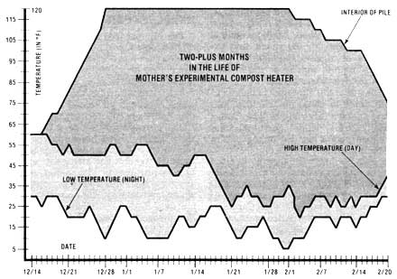

Update: Mother's Compost Heat Experiments
Reproducing Jean Pain's technique for producing hot water from a compost pile.
By the Mother Earth News editors
May/June 1980
MOM's researchers prove that Jean Pain is, indeed, onto something "hot"!
In the last issue of this publication, we described French farmer Jean Pain's techniques for producing hot water and heated air-and even methane gas-from massive and carefully constructed compost piles (see "The Genius of Jean Pain", MOTHER NO. 62, page 92). We also reported the beginnings of MOM's own experiments with using compost to warm water, and told how the initial test was-at the moment-yielding some exciting results. Since that time, MOTHER's researchers have had a chance to complete (and learn from) their early attempt at "organic water heating", and everyone here figured that-even though we've got further compost experiments planned-you'd want to hear about those "first round" results right away.
Here's what happened: MOM's prototype "heater" consisted of a thoroughly saturated mound of wood chips and manure-combined in a four-to-one ratio that also contained a spiraling length of 1" semi rigid plastic pipe (the conduit's inlet and outlet extended, of course, outside of the pile).
The organic heap was finished on December 14, 1979 . . . and only 12 days later, the temperature of the mound's core had climbed all the way to 120°F! As you can imagine, MOTHER's research staffers were quite delighted with the heater's impressive start.
The experimental brush-and-manure pile kept on cooking at a stable 120° right through January, but then on February 2nd-during the longest cold snap of the winter-the compost mound's temperature started a slow and irreversible decline. By the middle of that month, the pile was (for all practical heat-producing purposes) "dead".
TWO REASONS
Why did MOM's first compost heater peak at 120°, hold its temperature for 5-1/2 weeks, and then drop off . . . while Monsieur Pain's brush heaps often maintain temperatures as high as 140° for up to nine months? Well, according to Larry Hollar-MOTHER's resource manager and the fellow in charge of our mound making operation-there are two chief reasons for the difference in results.
"First off," says Larry, "you have to realize that Jean Pain's compost piles contain from 50 to 100 tons of watersoaked brush clippings, while our prototype mound weighed only around five tons. Such a difference in size means that M. Pain's heaps have a lot more decomposing material to provide heat than did ours, and-even more important-that his mounds also have a lot more insulating mass protecting the core of the compost heap. Our smaller pile, on the other hand, could "bounce off" the chill of some occasional 15° nights in January without any difficulty, but-after a solid week of below-freezing night and day temperatures-the all-pervasive cold finally seeped through the "walls" of our heater and permanently slowed its bacterial action.
"The other main factor working in M. Pain's favor is the size of his wood particles. We had to build our heap out of ordinary wood chips that were as large as a half-inch in thickness, and it's pretty likely that the bacteria which decompose such carbon matter-thereby creating the pile's heat-simply couldn't work their way into the hearts of the chunky pieces. Jean's wood bits, though, are only one-sixteenth of an inch thick (he designed a special shredder to produce the thin slivers) . . . and such skinny wood slices provide a great deal more surface area for those heat-making micro-organisms to act upon.
"Of course, the most important result of our test is the fact that it proved that compost piles really can generate usable heat! Anytime you've got a mound that's maintaining a temperature of 100° or more, you can use water routed through its center to warm a bath or heat a dwelling . . . and for almost two months last winter, we did have a 'three-digit' cooker. So Jean Pain's concept is definitely feasible. Once we get the bugs out-by building larger piles and deciding how to make an effective wood shredder-we'll have a truly practical heat source!
THE HEAT GOES ON
So MOTHER's first hands-on experience with Jean Pain's composting methods produced some encouraging results . . . along with a good bit of the concrete learning you can gain only by trying something for yourself. And-as you read this page-our unstoppable researchers are getting started on their next round of heat mound experiments. In fact, the Carolina composters plan to have a larger pile operating this summer . . . so all of you folks who come out to MOM's seminars will have the opportunity to observe a "bacteria-powered" water heater for yourselves!
EDITOR'S NOTE: MOTHER NO. 62, which contained the original Jean Pain article, may be ordered for $3.00-plus $1.00 shipping and handling-from THE Mother Earth News (restricted) , P.O. Box 70, Hendersonville, North Carolina 28791.
 Mother's ""cellulose cylinder"" at work . . . before a bacteria-chilling cold snap struck. |
 |
|